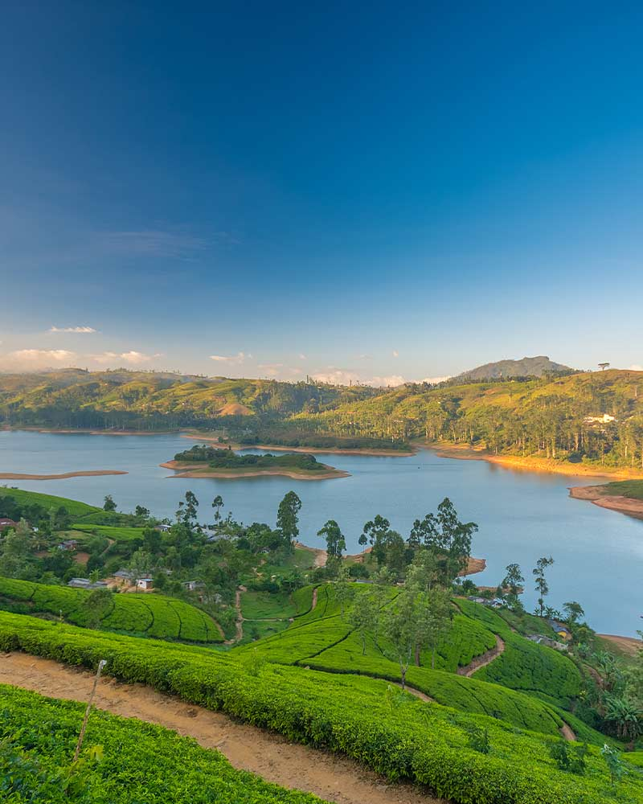
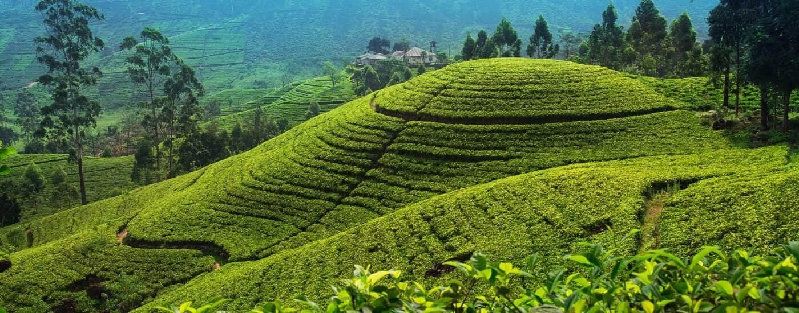
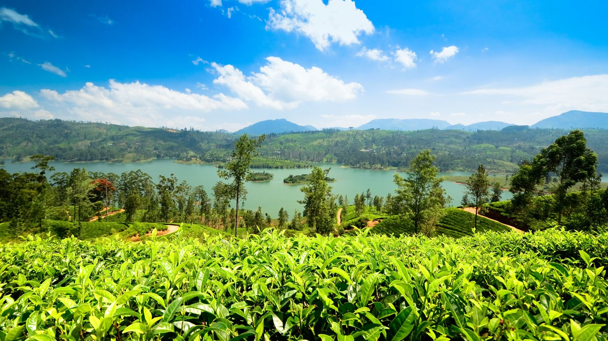

Nuwara Eliya, often called “Little England”, is nestled in the central highlands of Sri Lanka. Known for its cool climate, colonial architecture, and endless tea plantations, it offers a peaceful retreat surrounded by misty mountains and rolling green landscapes.

